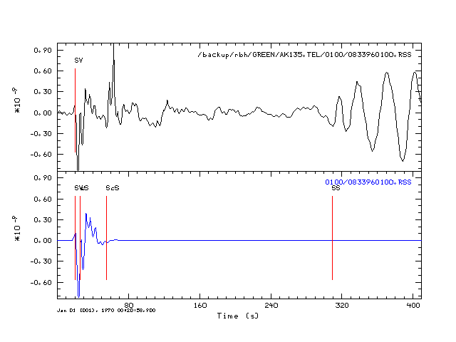
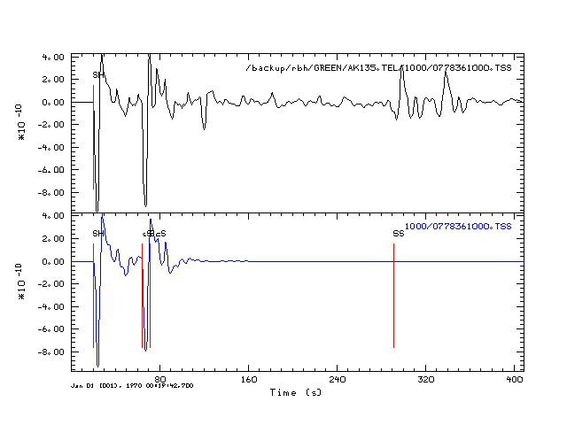

Changed March 19, 2009 because of corections to the source code. Specifically there were numericla problems with the receiver crust response to incident teleseismic S wave because of numerical instabilities in the formulation which were corrected through the use of a compound matrix. In addition, the hudson96 code uses a modified routine to get the first arrival time, one that estimates the causality shift of the T* operator. For this reason the hudson96 synthetics are slightly early compared to the complete hspec96 synthetics.
The purpose of this exercise is to evaluate the usefulness of the program hudson96 for the prediction of the teleseismic S-wave. One problem is that multiples, such as SS, are not considered, In addition the complexity of the P-SV conversions, means that the Z and R traces cannot be modeled as well as the T trace, which consists of only SH waves.
The SH synthetics are adequate to 75 degrees. At larget distances the hudson96 synthetics are incorrect since the first arrival time is really that of SKS and not S. Because of this the amplitudes are not correct since the geometrical spreading used for the telesiesmic S arrivals in that of SKS and not S. Fixing this qould require a modification of the routine fstarr in the program. However, even if the time is corrected in the synthesis, the synthetics may not be useful because of ignoring the ScS arrival.
The transverse component, SH, synthetics comapre very well, since there are not extra arrivals due to the P-SV conversion.
The comparisons here are for the SS component only, just to reduce the numebr of images. Two focal depths are considered, 10 and 100 km.
| Arc Distance | ZSS | RSS | TSS |
| 30 | |||
| 60 | |||
| 65 | |
||
| 70 | |||
| 75 |  | ||
| 80 | |||
| 85 |
| Arc Distance | ZSS | RSS | TSS |
| 30 | |||
| 60 |  |
||
| 65 | |||
| 70 |  | ||
| 75 | |||
| 80 | |||
| 85 |  |